15 Quán Cafe Phố Cổ nhất định phải thử khi đến Hà Nội
Khi đến Hà Nội, ngoài việc khám phá những di tích lịch sử, không thể bỏ qua trải nghiệm ngồi tại những quán cafe Phố Cổ, nơi lưu giữ trọn vẹn nét văn hóa và không gian xưa cũ. Các quán cafe này mang đến không gian yên bình, đậm chất cổ kính với lối kiến trúc xưa và hương vị cafe truyền thống khó quên.
Top 15 Quán Cafe Phố Cổ nhất định phải thử khi đến Hà Nội
Trong nhịp sống hối hả và bận rộn ngày nay, ai cũng cần một nơi để thoát khỏi căng thẳng, tìm chút bình yên giữa bộn bề cuộc sống. Những quán cafe tại Phố Cổ Hà Nội chính là điểm dừng chân lý tưởng để bạn thư giãn, lắng nghe nhịp sống chậm rãi và tận hưởng khoảnh khắc yên bình giữa lòng thành phố. Hãy cùng khám phá những quán cafe Phố Cổ nhất định phải thử khi đến đây!
Phê La
Phê La – 24 Hàng Cót là một điểm dừng chân độc đáo giữa lòng phố cổ Hà Nội, mang đến cho khách hàng một trải nghiệm mới mẻ và thoải mái với không gian cắm trại giữa phố thị. Quán cafe này không chỉ thu hút bởi vị trí thuận lợi mà còn bởi phong cách thiết kế sáng tạo, dễ gần, đem lại cảm giác thư thái cho mọi người ghé thăm.
Phê La nổi bật với điểm nhấn về nguyên liệu tươi ngon, đặc biệt là việc sử dụng trà Ô Long từ cao nguyên Đà Lạt. Mỗi ly trà ở đây đều mang hương vị đậm đà, thuần khiết, thể hiện rõ tinh thần tự nhiên của loại trà nổi tiếng này.
Ngoài trà Ô Long, thực đơn của quán còn có nhiều loại đồ uống khác như cà phê đậm đà, các loại trà trái cây và nước ép tươi mát. Với sự kết hợp hài hòa giữa nguyên liệu chất lượng và tay nghề của barista, mỗi thức uống tại Phê La đều mang đến trải nghiệm tinh tế và độc đáo.
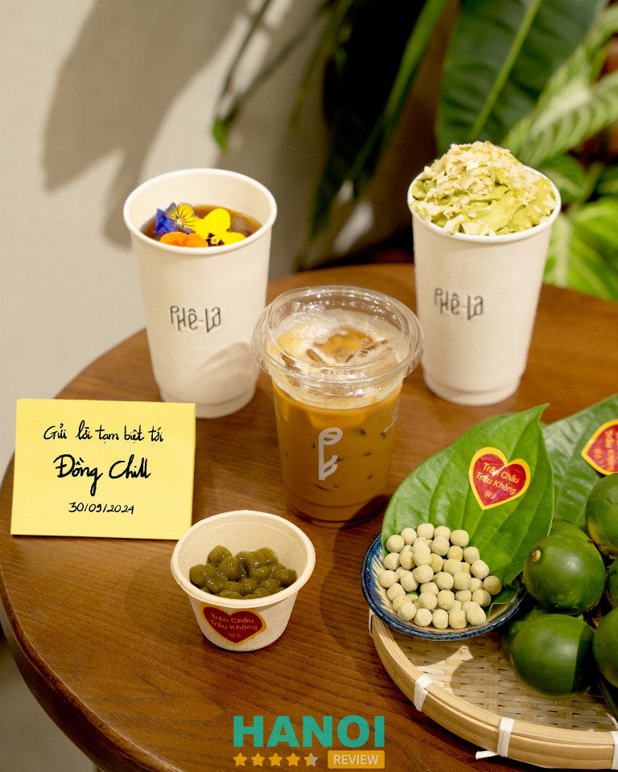
Đội ngũ nhân viên tại Phê La luôn nhiệt tình, thân thiện và sẵn sàng hỗ trợ khách hàng. Từ việc giới thiệu đồ uống, cho đến việc phục vụ nhanh chóng và chu đáo, mọi dịch vụ tại quán đều được thực hiện với tinh thần chuyên nghiệp, nhằm mang lại cho thực khách những trải nghiệm thoải mái nhất.
Ngoài ra, Phê La còn là một không gian lý tưởng để gặp gỡ bạn bè, thư giãn sau những giờ làm việc căng thẳng, hay đơn giản là tận hưởng một buổi chiều nhẹ nhàng bên ly trà Ô Long.
Với phong cách thiết kế mới lạ, thức uống chất lượng và đội ngũ nhân viên thân thiện, Phê La – 24 Hàng Cót hứa hẹn sẽ là điểm đến lý tưởng cho những ai muốn tìm kiếm sự mới mẻ và trải nghiệm khác biệt tại Hà Nội.
Thông tin liên hệ:
- Địa chỉ: 24 Hàng Cót, Q. Hoàn Kiếm, Hà Nội
- Điện thoại: 1900 3013
- Fanpage: FB.com/phelaxinchao
- Giờ mở cửa: 07:30 – 23:00
Xem thêm: 10 Quán bún đậu mắm tôm Phố Cổ Hà Nội ngon nổi tiếng, lâu đời
Cộng Cà phê
Cộng Cà Phê là quán cafe với lối thiết kế độc đáo, khiến bất kỳ ai bước vào cũng có cảm giác như được quay lại thời thơ ấu. Những bức tường gạch đỏ sờn tróc, các kệ gỗ cũ kỹ, và nội thất mộc mạc tạo nên không gian ấm áp, gợi nhắc về một Hà Nội xưa cũ, trầm mặc nhưng đầy chất thơ.
Cộng Cà Phê không chỉ ghi điểm bởi không gian ấn tượng mà còn thu hút bởi thực đơn phong phú. Từ những tách cà phê đậm đà đến các loại sinh tố, nước ép tươi mát, mỗi món uống đều được chế biến kỹ lưỡng, phù hợp với nhiều sở thích khác nhau.
Đặc biệt, nước ép tại Cộng là một điểm nhấn không thể bỏ qua, từ nước cóc chua dịu, nước bưởi thanh mát đến các loại nước ép như cam, cà rốt, dứa, dưa hấu… Tất cả đều được làm từ nguồn nguyên liệu tươi ngon, đảm bảo chất lượng và an toàn cho sức khỏe.
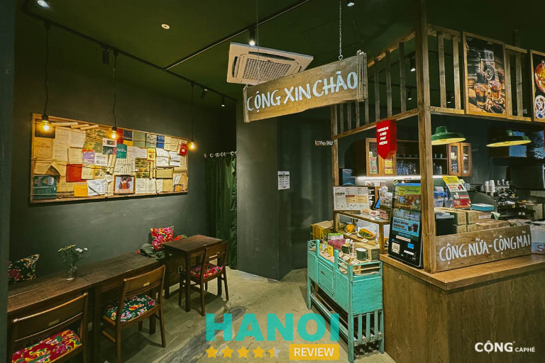
Không chỉ dừng lại ở thức uống, Cộng Cà Phê còn mang đến trải nghiệm ẩm thực độc đáo với những món ăn nhẹ, tạo nên sự hài hòa giữa các hương vị truyền thống và hiện đại. Khách hàng đến đây có thể vừa thưởng thức một tách cà phê thơm lừng, vừa nhâm nhi những món ăn nhẹ trong không gian yên bình, thoáng đãng.
Đội ngũ nhân viên tại Cộng luôn giữ nụ cười thân thiện, phong cách phục vụ chuyên nghiệp và chu đáo. Dù quán thường xuyên đông khách, nhưng sự nhiệt tình và nhanh nhẹn của nhân viên khiến mỗi thực khách đều cảm thấy thoải mái và được chào đón nồng nhiệt.
Một điều thú vị khác tại Cộng chính là không gian chia thành nhiều tầng với cách bài trí riêng biệt, mỗi tầng mang một nét độc đáo, cho phép khách hàng tự do chọn lựa không gian phù hợp với tâm trạng.
Những ai yêu thích sự riêng tư có thể ngồi ở các tầng trên, nơi ánh sáng dịu nhẹ len qua những khung cửa gỗ, tạo nên một góc nhỏ ấm cúng để đọc sách hay làm việc.
Thông tin liên hệ:
- Địa chỉ: 27 P. Nhà Thờ, Hàng Trống, Q. Hoàn Kiếm, Hà Nội
- Điện thoại: 0869353605
- Email: info@congcaphe.com
- Website: congcaphe.com
- Fanpage: FB.com/CongCaphe
- Giờ mở cửa: 07:00 – 23:00
Hanoi House Cafe
Ẩn mình trong một con hẻm nhỏ trên đường Lý Quốc Sư, Hanoi House Cafe là điểm dừng chân lý tưởng dành cho những ai yêu thích không gian yên bình và hoài cổ giữa lòng Hà Nội tấp nập.
Với lối thiết kế mang đậm dấu ấn thời gian, quán đã trở thành nơi mà nhiều du khách truyền tai nhau phải ghé đến mỗi khi đặt chân đến thủ đô. Tấm biển “Hanoi” màu xanh nổi bật trên bức tường gạch thô mộc mạc ngay lối vào đã trở thành biểu tượng mà ai cũng muốn lưu lại trong bức ảnh của mình.
Bước chân vào quán, cảm giác như đang trở về một Hà Nội xưa với những gam màu trầm, ấm. Hanoi House mang nét cổ kính nhưng không kém phần tinh tế khi được bài trí cẩn thận từ những món đồ cổ, bàn ghế gỗ đến ánh sáng dịu nhẹ, tạo nên không gian thoải mái và gần gũi.
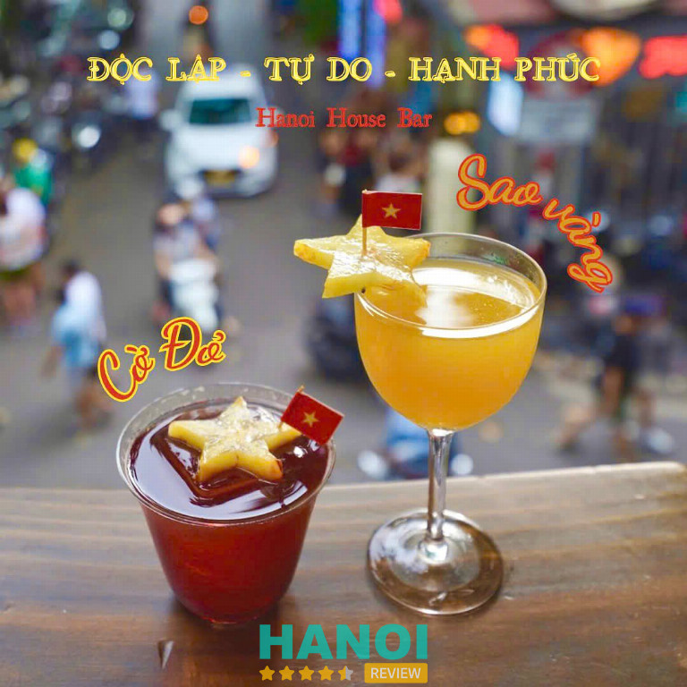
Vào những buổi trưa yên tĩnh, không gian quán trở nên vắng vẻ hơn, mang đến cảm giác thư thái với tiếng nhạc không lời hay những bản tình ca Hà Nội du dương. Vào những buổi chiều hay tối, quán dần nhộn nhịp hơn nhưng vẫn giữ được nét yên bình, khiến bất cứ ai bước vào cũng cảm thấy như đang lạc vào một thế giới tĩnh lặng giữa phố phường nhộn nhịp.
Thực đơn của Hanoi House cũng không hề thua kém về độ đa dạng và hấp dẫn. Những ai lần đầu đến Hà Nội không nên bỏ qua cơ hội thưởng thức những loại đồ uống đặc trưng như sấu đá, sữa chua nếp cẩm, hay ly cà phê trứng nổi tiếng.
Điểm cộng lớn của quán không thể không nhắc đến là phong cách phục vụ tận tình, chuyên nghiệp. Nhân viên luôn nở nụ cười chào đón và sẵn sàng giúp đỡ khách hàng. Sự niềm nở, chu đáo này đã góp phần không nhỏ vào việc tạo nên không khí ấm cúng, thân thiện, khiến cho mỗi vị khách ghé thăm đều cảm thấy được trân trọng và chăm sóc.
Thông tin liên hệ:
- Địa chỉ: Tầng 2, 47 Lý Quốc Sư, Q. Hoàn Kiếm, Hà Nội
- Điện thoại: 0865 551 847
- Email: thehanoihouse@gmail.com
- Fanpage: FB.com/thehanoihouse
- Giờ mở cửa: 09:00 – 01:00
Xem thêm: 10 Tiệm bánh mì tại Phố Cổ ngon nổi tiếng, hút khách nhất
Gạo cafe
Gạo Café chính là một điểm đến lý tưởng cho những ai muốn tìm kiếm một không gian thư giãn giữa lòng Hà Nội. Với mặt tiền ấn tượng, quán được điểm tô bởi những giàn hoa giấy rực rỡ cùng bức tường graffiti nghệ thuật, tạo nên bầu không khí vừa hiện đại vừa trữ tình.
Khi bước vào quán, mùi hương thơm nồng nàn của cà phê sẽ lập tức cuốn hút mọi giác quan. Gạo Café không chỉ phục vụ đồ uống, mà còn là nơi mang đến những món bánh ngọt được làm tươi mỗi ngày, làm cho thực khách có thể tận hưởng vị ngọt ngào cùng hương vị cà phê thơm lừng.
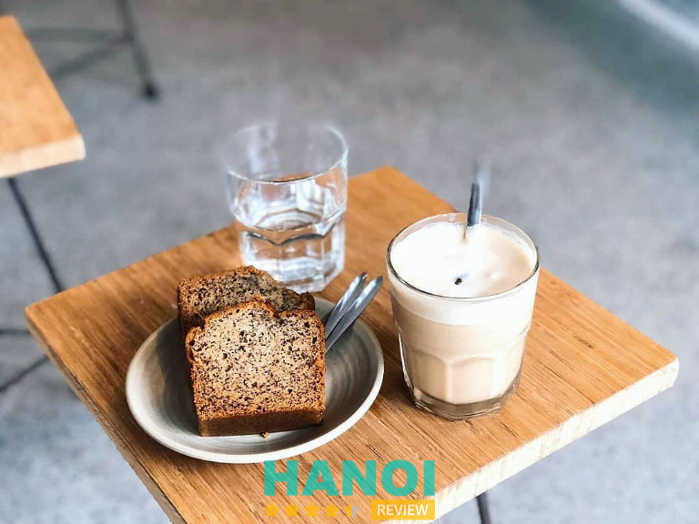
Menu của Gạo Café không quá phong phú, nhưng mỗi món đều được chăm chút kỹ lưỡng. Quán tự hào phục vụ những ly cà phê specialty chất lượng, được chế biến từ những nguyên liệu chọn lọc.
Từng bước từ việc sơ chế, rang xay đều được thực hiện một cách tỉ mỉ, mang đến những ly cà phê với hương vị cân bằng, không hề đắng gắt mà vẫn đủ để đánh thức mọi cảm xúc. Bên cạnh cà phê, các loại trà cũng rất đáng thử, với vị thanh mát, mang lại cảm giác dễ chịu cho người thưởng thức.
Đặc biệt, Gạo Café còn ghi điểm với các tín đồ yêu thích sống ảo nhờ không gian đẹp và thoáng đãng. Những góc nhỏ trong quán đều trở thành điểm chụp hình lý tưởng, đặc biệt trong những ngày thời tiết đẹp trời.
Với hương vị cà phê tuyệt hảo, không gian ấm cúng và sự phục vụ thân thiện, đây chắc chắn là một điểm đến không thể bỏ qua cho những ai muốn tìm kiếm giây phút thư giãn và thú vị tại Hà Nội. Hãy ghé thăm và cảm nhận sự khác biệt mà Gạo Café mang lại!
Thông tin liên hệ:
- Địa chỉ: 10 Chợ Gạo, Q. Hoàn Kiếm, Hà Nội
- Điện thoại: 0348 010 659
- Email: gaocafehanoi@gmail.com
- Website: gaocafe.vn
- Fanpage: FB.com/gaocafehanoi
- Giờ mở cửa: 09:30 – 22:30
Xem thêm: 10 Quán Pub ở Hà Nội nổi tiếng, được nhiều người yêu thích nhất
Rue Du Camp
Rue Du Camp là địa chỉ không thể bỏ qua nếu bạn đang tìm kiếm một quán cafe mang phong cách độc đáo tại phố cổ Hà Nội. Với lối thiết kế ấn tượng và tinh tế, Rue Du Camp là một điểm đến lý tưởng cho các bạn trẻ, đặc biệt là sinh viên, muốn tận hưởng không gian sáng tạo và chụp những bức ảnh thật đẹp.
Bước vào Rue Du Camp, bạn sẽ ngay lập tức bị cuốn hút bởi không gian được chăm chút tỉ mỉ đến từng chi tiết. Quán cafe này nổi bật với kiến trúc mang hơi hướng hiện đại, xen lẫn những yếu tố cổ điển, tạo nên sự kết hợp hài hòa giữa nét mới mẻ và sự hoài cổ.
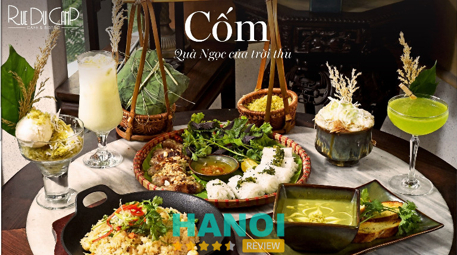
Menu đồ uống tại Rue Du Camp rất đa dạng, từ các loại cà phê thơm ngon, đậm vị cho đến những ly trà thanh mát, được pha chế cầu kỳ. Những tín đồ cà phê chắc chắn sẽ yêu thích hương vị đặc biệt của các loại cà phê thủ công tại đây, trong khi những ai muốn tìm kiếm sự tươi mát có thể lựa chọn các loại nước ép hoặc trà trái cây thơm ngon.
Không thể không nhắc đến đội ngũ nhân viên tại Rue Du Camp, những người luôn nhiệt tình và chu đáo. Với phong cách phục vụ chuyên nghiệp và thân thiện, mỗi vị khách đến đây đều nhận được sự quan tâm tận tình, khiến họ cảm thấy thoải mái và dễ chịu trong suốt thời gian thưởng thức tại quán.
Rue Du Camp không chỉ là nơi lý tưởng để gặp gỡ bạn bè, làm việc hay thư giãn, mà còn là địa điểm để bạn có thể lưu giữ những khoảnh khắc đẹp qua những bức ảnh đầy nghệ thuật. Từng góc quán đều được thiết kế để trở thành một background hoàn hảo, giúp bạn dễ dàng tạo nên những bức ảnh đầy phong cách và ấn tượng.
Với không gian sáng tạo, đồ uống chất lượng và dịch vụ tận tình, Rue Du Camp là một trong những quán cafe phố cổ đáng thử khi bạn có dịp ghé thăm Hà Nội. Nơi đây chắc chắn sẽ mang lại cho bạn những trải nghiệm thú vị và đáng nhớ.
Thông tin liên hệ:
- Địa chỉ: 50 Tràng Thi, Q. Hoàn Kiếm, Hà Nội
- Điện thoại: 0967448088
- Email: rueducamp.pos@gmail.com
- Fanpage: FB.com/Rueducampcafenbistro
- Giờ mở cửa: 08:00 – 23:00
Nola Café
Nola Café tọa lạc ở một góc nhỏ của Hà Nội, nơi mà chỉ những ai yêu thích khám phá mới tìm thấy. Cửa vào quán chỉ là một ngách nhỏ nhưng đủ sức hấp dẫn để thu hút ánh nhìn. Đây là một trong những quán cà phê đặc trưng của phố cổ, nơi mà những tòa nhà cao tầng không thể che khuất vẻ đẹp riêng biệt của nó.
Không gian của Nola Café được thiết kế theo phong cách sáng tạo, với những góc cạnh độc đáo và ấm cúng. Các khu vực ngồi được bài trí thông minh, từ bàn bên cửa sổ cho đến những góc nhỏ xinh xắn, mang đến cảm giác thân mật.
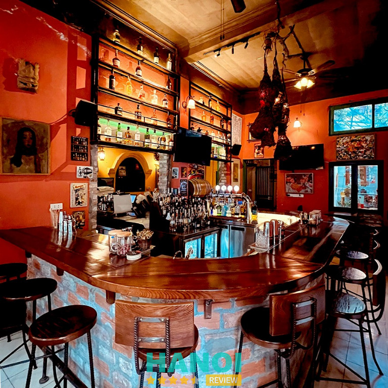
Thực đơn tại Nola Café rất đa dạng với nhiều loại đồ uống hấp dẫn. Những tách cà phê được pha chế từ những hạt cà phê chất lượng, mang đến hương vị đậm đà và thơm ngon. Bên cạnh cà phê, quán còn phục vụ các loại trà và nước trái cây tươi mát, giúp thực khách có thêm nhiều sự lựa chọn.
Khi ghé thăm Hà Nội, không thể bỏ qua Nola Café – nơi lý tưởng để thư giãn và tận hưởng không khí trong lành. Với không gian độc đáo, đồ uống chất lượng và dịch vụ tận tâm, quán hứa hẹn sẽ mang đến cho bạn những trải nghiệm tuyệt vời giữa lòng phố cổ.
Thông tin liên hệ:
- Địa chỉ: 89 Mã Mây, Hàng Buồm, Q. Hoàn Kiếm, Hà Nội
- Điện thoại: 0977 738 835
- Email: nola.cafe.inhanoi@gmail.com
- Fanpage: FB.com/Nola.in.hanoi
- Giờ mở cửa: 10:00 – 23:30
Xem thêm: 10 Quán dê tại Hà Nội thực đơn đa dạng, dịch vụ chất lượng
Tranquil Books & Coffee
Tranquil Books & Coffee là địa chỉ quen thuộc cho những ai yêu thích không gian yên tĩnh và ấm áp tại Hà Nội. Nằm ẩn mình trong một góc nhỏ của phố phường, quán mang đến một bầu không khí dễ chịu, với menu đồ uống phong phú và hương vị đặc trưng, Tranquil chắc chắn sẽ làm hài lòng cả những thực khách khó tính nhất.
Tại Tranquil, thực khách có thể ngồi trên gác lửng, nhâm nhi ly cà phê thơm lừng và ngắm nhìn khung cảnh nhộn nhịp bên ngoài. Tiếng nhạc du dương nhẹ nhàng vang lên trong không gian, tạo cảm giác thư thái và dễ chịu. Đây chính là nơi lý tưởng để đắm chìm trong những cuốn sách yêu thích hoặc đơn giản chỉ là thư giãn và tận hưởng từng khoảnh khắc.
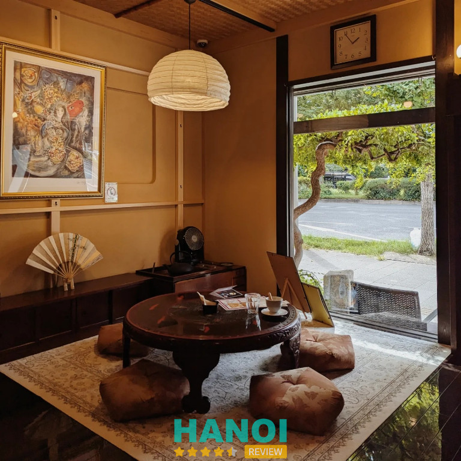
Mặc dù có diện tích hơi nhỏ, nhưng Tranquil Books & Coffee được thiết kế rất tinh tế và ấn tượng. Những góc nhỏ xinh xắn như tủ sách cao chạm trần, bức tường gạch đỏ tạo nên vẻ đẹp cổ điển, và mảnh sân vàng nắng ngập tràn ánh sáng khiến cho không gian càng thêm phần lãng mạn. Nội thất giản dị nhưng được bài trí khéo léo, tạo ra không khí thân thiện và dễ chịu cho tất cả thực khách.
Tranquil Books & Coffee cũng nổi tiếng với các loại đồ uống độc đáo và phong phú. Những ly cà phê được pha chế từ những hạt cà phê tuyển chọn, mang đến hương vị đậm đà và thơm ngon. Ngoài ra, quán còn phục vụ các loại trà và đồ uống khác được chế biến từ nguyên liệu tươi mát, thích hợp cho những ai yêu thích sự mới lạ và độc đáo.
Tranquil Books & Coffee chính là một điểm đến không thể bỏ lỡ khi khám phá Hà Nội. Với không gian yên bình, thực đơn phong phú và dịch vụ tận tình, quán chắc chắn sẽ mang đến những trải nghiệm tuyệt vời cho mọi thực khách.
Thông tin liên hệ:
- Địa chỉ: 5 Nguyễn Quang Bích, Cửa Đông, Q. Hoàn Kiếm, Hà Nội
- Điện thoại: 0395 049 075
- Email: cafetranquil@gmail.com
- Fanpage: FB.com/cafetranquil
- Giờ mở cửa: 08:00 – 22:30
The Note Coffee
the Note Coffee là một địa điểm thu hút khách hàng bởi không gian ấm cúng và những tấm giấy note đầy màu sắc. Những tờ giấy nhỏ ghi lại những suy nghĩ, cảm xúc của khách hàng tạo nên một bức tranh cảm xúc sống động, làm say mê những ai đã ghé thăm hay chỉ đơn giản là nghe qua.
Quán có vị trí lý tưởng, mang đến cho thực khách tầm nhìn tuyệt đẹp ra Hồ Hoàn Kiếm. Ngồi tại đây, mọi người có thể cảm nhận được không khí bình yên, thư giãn giữa những bộn bề của cuộc sống. Dù cho ai đến với The Note Coffee, chắc chắn đều sẽ cảm nhận được sự gần gũi và thân thiện.
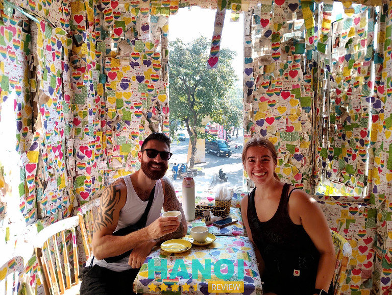
Nét đặc biệt của The Note Coffee chính là sự kết hợp giữa không gian và đồ uống. Các món thức uống tại đây đều được chăm chút tỉ mỉ, từ ly cà phê thơm ngon đến những loại trà thanh mát.
Đội ngũ nhân viên tại The Note Coffee luôn thân thiện và nhiệt tình, sẵn sàng giúp đỡ khách hàng trong việc chọn lựa thức uống phù hợp. Họ không chỉ mang đến dịch vụ chuyên nghiệp mà còn tạo ra không khí thoải mái, giúp mọi người cảm thấy như đang ở nhà.
The Note Coffee thực sự là một điểm đến không thể bỏ lỡ khi khám phá Hà Nội. Tại đây, không chỉ có không gian đáng yêu và những tấm note dễ thương, mà còn có những khoảnh khắc thư giãn tuyệt vời bên những người bạn và ly cà phê yêu thích.
Thông tin liên hệ:
- Địa chỉ: 64 Lương Văn Can, Q. Hoàn Kiếm, Hà Nội
- Điện thoại: 0975 194 466
- Email: thenotecoffee@gmail.com
- Website: thenotecoffee.com
- Fanpage: FB.com/TheNoteCoffee
- Giờ mở cửa: 08:00 – 22:30
Xem thêm: 10 Địa chỉ bán nem chua rán ở Hà Nội nổi tiếng ngon nhất
Thưởng Trà Quán
Thưởng Trà Quán là một điểm dừng chân lý tưởng cho những ai yêu thích sự bình yên và phong cách hoài cổ giữa lòng Hà Nội. Nằm sâu trong con ngõ nhỏ, quán mang đến cảm giác tách biệt hoàn toàn với nhịp sống hối hả của phố thị.
Được bao quanh bởi những hàng cây xanh mát và ánh nắng dịu nhẹ, nơi đây mang lại sự tĩnh lặng và gần gũi với thiên nhiên, giúp thực khách có những giây phút thư giãn tuyệt đối.
Mỗi chi tiết của quán đều thể hiện sự chăm chút và tinh tế. Từ những bộ bàn ghế gỗ mộc mạc, cho đến các góc nhỏ trang trí bằng những chiếc bình hoa đơn giản, tất cả đều tạo nên một không gian ấm áp và thoải mái.
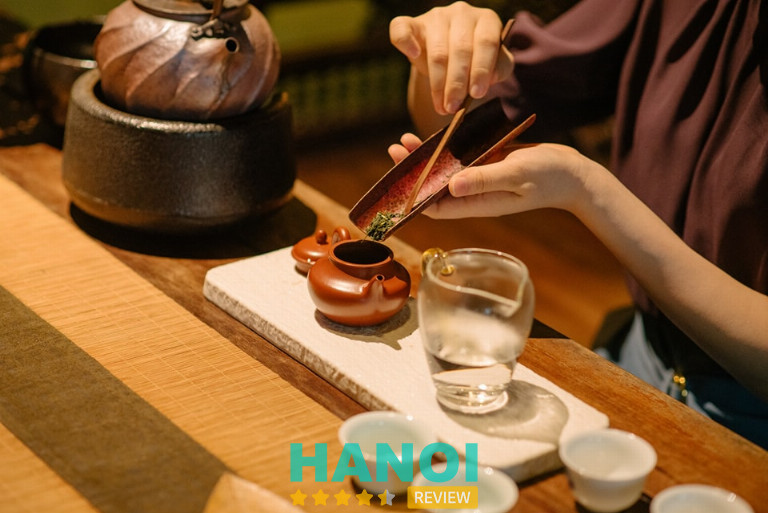
Một trong những điểm độc đáo của Thưởng Trà Quán chính là cách thưởng thức trà vô cùng đặc biệt. Thực khách được giới thiệu và hướng dẫn cách pha trà tỉ mỉ từ những nhân viên nhiệt tình, giúp họ hiểu rõ hơn về nghệ thuật thưởng trà.
Không chỉ có trà, quán còn phục vụ nhiều món ăn kèm tinh tế như bánh đậu xanh, hạt sen, bánh chả, tạo nên sự kết hợp hài hòa và phong phú cho trải nghiệm thưởng thức.
Ngoài hương vị trà thơm ngon, không gian của quán còn thường xuyên tổ chức các buổi biểu diễn âm nhạc nhỏ. Những giai điệu nhẹ nhàng, sâu lắng của dòng nhạc jazz hay RnB tạo nên một bầu không khí lãng mạn và đầy cảm xúc. Sự kết hợp giữa trà và âm nhạc mang đến một trải nghiệm độc đáo, giúp thực khách cảm nhận sự giao thoa giữa quá khứ và hiện đại.
Mặc dù nằm ở vị trí hơi khuất, Thưởng Trà Quán vẫn thu hút đông đảo khách hàng nhờ sự khác biệt và độc đáo. Một khi đã đến đây, hầu như ai cũng mong muốn quay lại nhiều lần để tận hưởng không gian thanh tĩnh, những chén trà ấm nóng và âm nhạc du dương.
Thông tin liên hê:
- Địa chỉ: P310 số 2E Tông Đản, Q. Hoàn Kiếm, Hà Nội
- Điện thoại: 0888 222 991
- Email: vietbac@thuongtra.org
- Website: thuongtra.com.vn
- Fanpage: FB.com/thuongtra
- Giờ mở cửa: 08:00 – 22:00
Trung Nguyên Legend
Trung Nguyên Legend là điểm đến lý tưởng cho những ai đam mê cà phê và yêu thích không gian văn hóa độc đáo. Nằm giữa lòng Hà Nội, quán cafe này tạo nên một không gian đặc biệt, nơi bạn không chỉ được thưởng thức những ly cà phê đậm đà mà còn đắm chìm trong những giá trị văn hóa và tri thức sâu sắc.
Không gian của quán mang đậm dấu ấn Việt Nam với thiết kế mộc mạc nhưng tinh tế. Những bộ bàn ghế gỗ, sàn lát gạch cổ điển cùng các chi tiết trang trí bằng gốm sứ thủ công đều toát lên sự gần gũi, truyền thống nhưng không kém phần sang trọng.
Bước vào Trung Nguyên Legend, bạn sẽ được thưởng thức những tách cà phê thượng hạng, mỗi loại cà phê đều mang một hương vị và câu chuyện riêng, khiến người thưởng thức không khỏi thích thú.
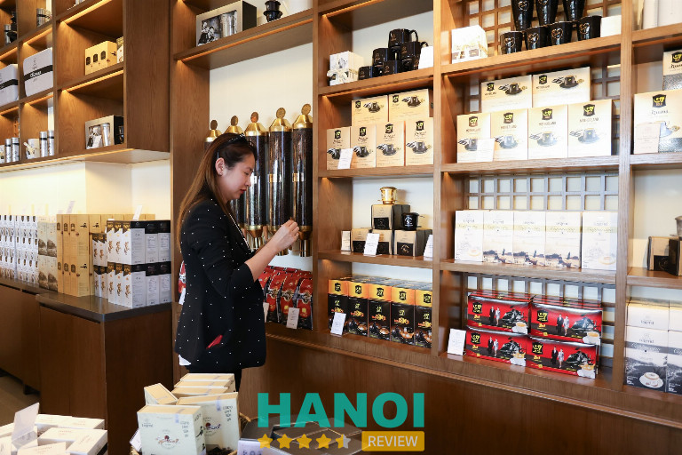
Đặc biệt, quán còn phục vụ ổ bánh mì đậm chất truyền thống với công thức đặc biệt, mang đến nguồn năng lượng hoàn hảo cho một ngày dài. Đây là sự kết hợp hoàn hảo giữa vị cà phê mạnh mẽ và hương vị bánh mì tinh tế, tạo nên trải nghiệm vừa thân quen vừa mới mẻ.
Không gian yên tĩnh, lịch sự và tinh tế của Trung Nguyên Legend không chỉ phù hợp cho việc thưởng thức cà phê mà còn là nơi lý tưởng cho những buổi hẹn gặp gỡ, làm việc hay đơn giản là thư giãn sau những giờ làm việc căng thẳng.
Đội ngũ nhân viên của quán được đào tạo bài bản, luôn sẵn sàng phục vụ khách hàng với thái độ chuyên nghiệp và tận tâm, mang đến sự thoải mái và hài lòng tuyệt đối cho mỗi vị khách.
Nếu bạn là người yêu thích không gian văn hóa, cà phê chất lượng và mong muốn tìm một nơi để kết nối với những giá trị tri thức, Trung Nguyên Legend chắc chắn là một lựa chọn không thể bỏ qua khi đến Hà Nội.
Thông tin liên hệ:
- Địa chỉ: 52 Hai Bà Trưng, Q. Hoàn Kiếm, Hà Nội
- Điện thoại: 1900 969 668
- Email: trungnguyenlegendmaps@gmail.com
- Website: trungnguyenlegendcafe.net
- Fanpage: FB.com/trungnguyenlegendcafe
- Giờ mở cửa: 06:30 – 22:30
Xem thêm: 10 Địa chỉ bán nem chua rán ở Hà Nội nổi tiếng ngon nhất
Loading T
Loading T là địa chỉ lý tưởng cho những ai yêu thích không gian cà phê mang đậm dấu ấn cổ điển và mộc mạc. Phong cách vintage đặc trưng của Loading T toát lên sự hoài cổ trong từng chi tiết, tạo ra một không khí ấm áp và gần gũi.
Quán được trang trí với những ánh đèn lung linh dọc theo bậc thềm xi măng đã xỉn màu, cùng với những chậu cây nhỏ xinh xắn bên lối đi. Những chi tiết nhỏ trong quán, từ ghế ngồi đến bàn decor, đều được chăm chút tỉ mỉ, mang lại cảm giác như đang lạc vào một thế giới khác.
Thực đơn đồ uống tại Loading T vô cùng đa dạng với mức giá hợp lý, phù hợp với túi tiền của nhiều đối tượng. Đặc biệt, những ly đồ uống đều được chế biến bởi chủ quán dễ thương, thân thiện và luôn sẵn lòng tư vấn cho khách hàng. Hương vị thơm ngon và chất lượng của từng món uống giúp làm hài lòng ngay cả những khách hàng khó tính nhất.
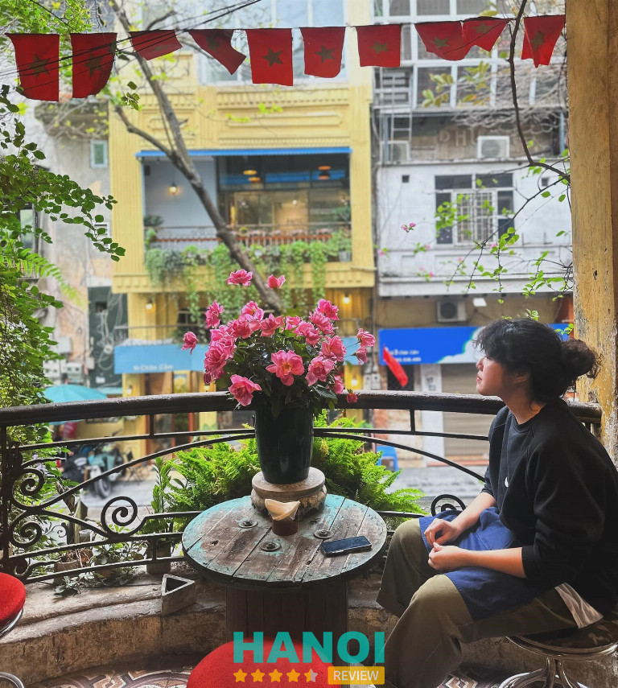
Ngồi nhâm nhi một ly cà phê trong không gian yên tĩnh, lắng nghe những giai điệu cổ điển du dương, chắc chắn sẽ giúp tinh thần thư giãn và sảng khoái hơn sau những giờ học tập và làm việc căng thẳng. Loading T không chỉ mang lại cho thực khách những giây phút bình yên, mà còn là nơi lý tưởng để gặp gỡ bạn bè hoặc đơn giản là thưởng thức khoảnh khắc một mình.
Tại Loading T, những buổi triển lãm tranh hay các hoạt động văn hóa thường xuyên được tổ chức tại đây, thu hút sự tham gia của đông đảo người yêu nghệ thuật. Điều này càng làm nổi bật thêm sự đa dạng trong trải nghiệm mà quán mang lại.
Loading T chính là một trong những quán cà phê mà mọi người nên ghé thăm khi đặt chân đến Hà Nội. Đến đây, không chỉ tìm thấy những ly cà phê ngon miệng, mà còn cảm nhận được sự ấm áp và thân thiện từ không gian và con người. Quán chính là nơi để mọi người giao lưu, kết nối và tạo nên những kỷ niệm đẹp bên ly cà phê.
Thông tin liên hệ:
- Địa chỉ: 8 Chân Cầm, Q. Hoàn Kiếm, Hà Nội
- Điện thoại: 0903 342 000
- Website: loadingtcafe.com
- Fanpage: FB.com/cfLoadingT
- Giờ mở cửa: 08:00 – 18:00
Xofa Café & Bistro
Xofa Café & Bistro là một trong những quán cà phê nổi bật tại Hà Nội có không gian độc đáo, nội thất được bài trí tinh tế, Xofa đã trở thành địa điểm lý tưởng cho những ai yêu thích việc chụp ảnh. Kiến trúc của quán tạo nên sự thu hút mạnh mẽ, khiến khách hàng không thể không ghé thăm.
Điểm nhấn đặc biệt của Xofa chính là những chiếc sofa êm ái, tạo nên sự thoải mái tối đa cho khách hàng. Không gian nơi đây mang đậm dấu ấn phương Tây với sự pha trộn giữa nét cổ điển và hiện đại, đem đến cảm giác thân quen nhưng cũng thật mới lạ. Khách hàng có thể thỏa sức lựa chọn vị trí ngồi yêu thích để tận hưởng thời gian bên bạn bè hoặc một mình.
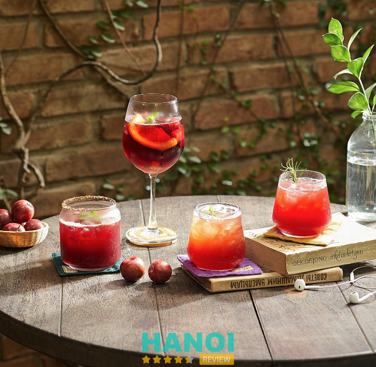
Đội ngũ nhân viên tại Xofa Café & Bistro được đào tạo bài bản, luôn sẵn lòng phục vụ khách hàng với thái độ lịch sự và thân thiện. Họ không chỉ quan tâm đến nhu cầu của thực khách mà còn phục vụ nhanh chóng, đảm bảo không để ai phải chờ đợi lâu.
Xofa Café còn nổi bật với giờ mở cửa linh hoạt, phục vụ 24/7, dù là sáng sớm hay giữa đêm khuya, quán vẫn luôn mở cửa chào đón mọi người. Khách hàng có thể thoải mái ở lại, thư giãn bên ly cà phê thơm ngon mà không cần lo lắng về thời gian.
Tại Xofa, mỗi góc nhỏ đều được chăm chút kỹ lưỡng, từ những bộ bàn ghế đến ánh đèn nhẹ nhàng, tất cả đều tạo nên một không khí dễ chịu và gần gũi. Không chỉ là nơi thưởng thức cà phê, Xofa còn là nơi để tận hưởng cuộc sống, tìm kiếm cảm hứng sáng tạo và kết nối với những người cùng sở thích.
Thông tin liên hệ:
- Địa chỉ: 14 Tống Duy Tân, Q. Hoàn Kiếm, Hà Nội
- Điện thoại: 0243 717 1555
- Email: xofacafe@gmail.com
- Fanpage: FB.com/xofacafe
Xem thêm: 10 Địa chỉ bán nem chua rán ở Hà Nội nổi tiếng ngon nhất
All Day Coffee
All Day Coffee là điểm đến lý tưởng cho những người yêu thích cà phê và không gian thư giãn có thể dành trọn cả ngày tận hưởng. Quán nằm trong khu phố cổ, mang đến bầu không khí dễ chịu, kết hợp giữa nét hiện đại và sự thân thiện, ấm cúng.
Quán có một danh sách đồ uống phong phú, từ những ly cà phê đậm đà, những tách trà thanh mát cho đến đặc sản cà phê trứng. Mỗi món đều được chế biến tỉ mỉ, mang lại trải nghiệm hoàn hảo cho bất kỳ khách hàng nào. Bên cạnh đó, All Day Coffee cũng phục vụ các loại bánh ngọt và đồ ăn nhẹ hấp dẫn, giúp bạn nạp năng lượng cho một ngày dài làm việc hoặc thư giãn.
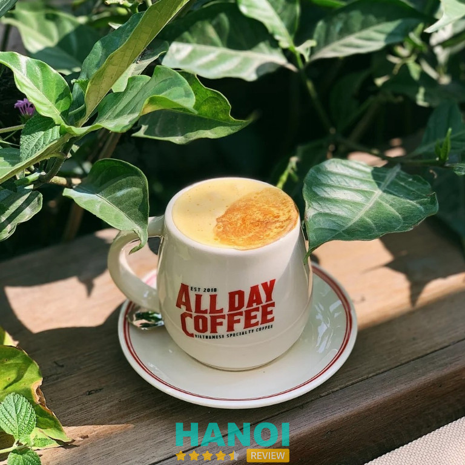
Không gian tại All Day Coffee mang đến sự thoải mái, gần gũi như đang ở nhà. Mỗi góc nhỏ trong quán đều được thiết kế một cách tinh tế, với ánh sáng dịu nhẹ và nội thất hài hòa. Những bản nhạc nhẹ nhàng, phù hợp với từng khung giờ trong ngày, tạo nên một bầu không khí yên bình, giúp bạn dễ dàng chìm đắm vào thế giới riêng của mình.
Những hạt cà phê được chọn lọc kỹ lưỡng từ những nguồn nguyên liệu uy tín, mang đến hương vị đậm đà, trọn vẹn. Điều này khiến All Day Coffee trở thành nơi gắn liền với sở thích của nhiều khách hàng yêu cà phê, giữa hàng ngàn quán tại Hà Nội.
Đội ngũ nhân viên tại All Day Coffee luôn tận tâm, chu đáo, mang đến cho khách hàng cảm giác thân thiện và thoải mái. Từ cách phục vụ chuyên nghiệp đến nụ cười luôn thường trực, mọi thứ đều góp phần làm cho trải nghiệm tại All Day Coffee trở nên đặc biệt hơn. Bạn có thể dành hàng giờ tại quán, làm việc hoặc trò chuyện cùng bạn bè mà không lo lắng về thời gian.
Thông tin liên hệ:
- Địa chỉ: 37 Quang Trung, Trần Hưng Đạo, Q. Hoàn Kiếm, Hà Nội
- Điện thoại: 0246 686 8090
- Email: alldaycoffeevn@gmail.com
- Fanpage: FB.com/alldaycoffeevn
- Giờ mở cửa: 07:00 – 23:00
Đinh Café
Nếu đang tìm kiếm một không gian yên tĩnh giữa lòng phố cổ Hà Nội, Đinh Café chắc chắn là một địa điểm không thể bỏ qua. Tọa lạc tại một vị trí đắc địa, quán cafe này mang trong mình vẻ đẹp mộc mạc, hoài cổ, và đã trở thành nơi lưu giữ những ký ức đặc biệt của nhiều thế hệ người Hà Nội.
Đồ uống tại Đinh Café là sự hòa quyện giữa truyền thống và hiện đại. Nổi bật trong thực đơn là cà phê trứng, một món đồ uống đặc trưng mà ai ghé đến quán cũng muốn thử.
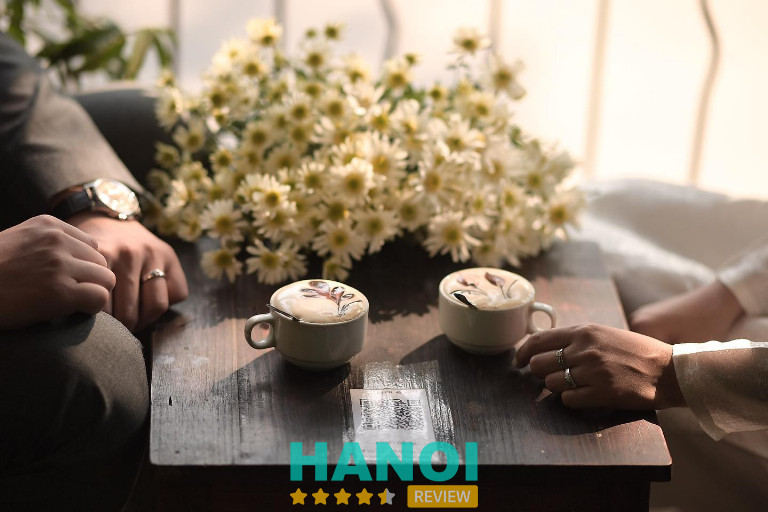
Cà phê ở đây đậm đà, kết hợp với lớp trứng mềm mịn, tạo nên hương vị khó quên. Ngoài cà phê trứng, thực đơn của quán còn đa dạng với nhiều loại đồ uống khác, từ cà phê đen, cà phê sữa cho đến trà và nước ép. Mỗi thức uống đều được chế biến tỉ mỉ, mang lại sự hài lòng cho khách hàng.
Điểm đặc biệt của Đinh Café không chỉ nằm ở không gian và đồ uống, mà còn ở cách phục vụ chân thành của nhân viên. Những nhân viên tại đây luôn sẵn sàng hỗ trợ, trò chuyện và tạo cảm giác thoải mái cho từng vị khách. Sự thân thiện, chu đáo của đội ngũ nhân viên đã góp phần không nhỏ vào việc xây dựng danh tiếng lâu đời cho quán.
Bước vào Đinh Café, người ta như lạc vào một thế giới khác, nơi mà thời gian dường như chậm lại, để mỗi khoảnh khắc đều trở nên đáng trân quý. Đây là nơi lý tưởng cho những ai yêu thích sự tĩnh lặng, muốn thưởng thức một tách cà phê thơm ngon trong một không gian đậm chất hoài niệm.
Thông tin liên hệ:
- Địa chỉ: 13 Đinh Tiên Hoàng, Q. Hoàn Kiếm, Hà Nội
- Điện thoại: 024 3824 2960
- Email: dinhcafe13@gmail.com
- Fanpage: FB.com/DinhCafe13
- Giờ mở cửa: 07:00 – 22:00
Ban Công Bistro
Ban Công Bistro là quán cafe mang vẻ đẹp cổ điển giữa lòng phố cổ Hà Nội. Quán là nơi giao thoa giữa nét hoài cổ và không gian hiện đại, khiến cho bất kỳ ai ghé thăm cũng cảm nhận được một không khí đặc biệt.
Mỗi món đồ trang trí trong quán đều được lựa chọn tỉ mỉ, tạo nên sự hài hòa giữa kiến trúc xưa và vẻ đẹp hiện đại. Ban Công Bistro tọa lạc trong một tòa nhà cổ kính được xếp hạng di tích thành phố, trở thành điểm đến quen thuộc của những ai yêu thích không gian yên bình giữa phố thị đông đúc.
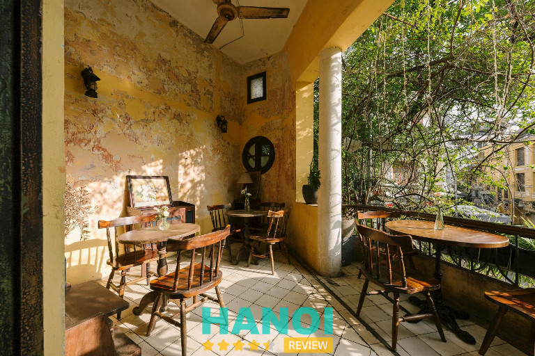
Không gian ban công là điểm nhấn đặc biệt, mang đến cho khách hàng cảm giác thư thái. Từ trên cao, ánh sáng tự nhiên len lỏi vào từng góc nhỏ, tạo ra một không gian lý tưởng để thưởng trà và chiêm ngưỡng cảnh sắc. Những chậu hoa được sắp đặt khéo léo quanh ban công, mang theo hương thơm dịu nhẹ của hoa cỏ, khiến mỗi buổi ngồi lại đây trở nên dễ chịu hơn bao giờ hết.
Bên cạnh đó, thực đơn của Ban Công Bistro phục vụ đa dạng các loại đồ uống từ cà phê đậm đà, trà thảo mộc thanh khiết, đến các món nước trái cây tươi ngon. Không chỉ nổi bật bởi không gian và đồ uống, đội ngũ nhân viên tại đây cũng mang đến sự thân thiện, chuyên nghiệp trong từng cử chỉ phục vụ.
Nếu bạn đang tìm kiếm một góc nhỏ yên tĩnh để thả hồn vào không gian phố cổ, Ban Công Bistro chính là địa điểm lý tưởng để ghé thăm. Không chỉ là quán cafe, nơi đây còn là điểm dừng chân để thư giãn, thưởng thức hương vị của Hà Nội qua từng ly cà phê, từng khoảnh khắc ngắm nhìn phố phường.
Thông tin liên hệ:
- Địa chỉ: 2 Đinh Liệt, Q. Hoàn Kiếm, Hà Nội
- Điện thoại: 0965 300 860
- Email: nhahangbancong@gmail.com
- Website: www.banconghanoi.com
- Fanpage: FB.com/banconghouse
- Giờ mở cửa: 07:00 – 23:00
Xem thêm: 10 Quán phở gà Phố Cổ lâu đời, nhất định phải thử khi đến đây
7 Tiêu chí lựa chọn quán Cafe Phố Cổ nhất định phải thử khi đến Hà Nội
Khi đến Hà Nội, chắc chắn bạn không thể bỏ qua cơ hội ghé thăm các quán cà phê đặc trưng nơi đây. Dưới đây là 10 tiêu chí lựa chọn quán cà phê Phố Cổ Hà Nội mà bạn nhất định phải thử để có trải nghiệm trọn vẹn, phù hợp với mọi đối tượng khách hàng.
- Vị trí đắc địa: Một quán cà phê giữa lòng Phố Cổ nên có vị trí thuận tiện, gần các điểm tham quan nổi tiếng. Điều này giúp khách dễ dàng tìm kiếm và thưởng thức cà phê sau những chuyến đi bộ khám phá phố phường.
- Không gian đặc trưng: Những quán cà phê mang đậm nét kiến trúc cổ kính, có không gian nhỏ xinh, ấm cúng luôn thu hút khách du lịch. Đây là nơi để thưởng thức cà phê và để cảm nhận Hà Nội.
- Thực đơn đa dạng: Lựa chọn những quán cà phê tại Phố Cổ có thực đơn phong phú, từ các món cà phê truyền thống như cà phê phin, cà phê trứng, cho đến những loại nước uống hiện đại phù hợp với nhiều sở thích.
- Giá cả hợp lý: Dù nằm ở khu vực du lịch, nhưng các quán cà phê Phố Cổ thường có mức giá hợp lý, phù hợp với mọi đối tượng, từ khách du lịch đến người dân địa phương. Mức giá vừa túi tiền luôn là một điểm cộng lớn.
- Phong cách phục vụ chuyên nghiệp: Một quán cà phê chất lượng không chỉ nằm ở đồ uống ngon mà còn ở phong cách phục vụ. Nhân viên lịch sự, nhanh nhẹn và sẵn sàng hỗ trợ khách hàng sẽ khiến bạn có cảm giác thoải mái khi ghé thăm.
- Không gian sống ảo: Nhiều quán cà phê ở Phố Cổ nổi tiếng với không gian đẹp, phù hợp cho những ai muốn chụp ảnh, lưu lại khoảnh khắc giữa phố phường Hà Nội xưa. Đây là một trong những yếu tố thu hút giới trẻ và khách du lịch quốc tế.
- Đánh giá từ khách hàng: Những quán cà phê nổi tiếng thường nhận được nhiều lời khen ngợi từ khách hàng, đặc biệt là trên các nền tảng mạng xã hội. Đánh giá tốt về chất lượng, không gian và dịch vụ sẽ giúp bạn chọn được quán phù hợp mà không cần đắn đo.
Phố cổ cũng vừa là một địa điểm thưởng thức cà phê vừa điểm dừng chân lý tưởng để bạn thư giãn, lắng nghe nhịp sống chậm rãi và tận hưởng khoảnh khắc yên bình giữa lòng thành phố. Hy vọng những địa chỉ trên sẽ mang lại những cái nhìn tổng quan, giúp bạn có thể tìm được một địa chỉ yêu thích của mình.
Có thể bạn quan tâm
- 10 Quán cơm ngon tại Phố Cổ Hà Nội đặc trưng vị truyền thống
- 10 Quán phở gà Phố Cổ lâu đời, nhất định phải thử khi đến đây
- 10 Quán phở gà Phố Cổ lâu đời, nhất định phải thử khi đến đây
- 10 Quán bún đậu mắm tôm Phố Cổ Hà Nội ngon nổi tiếng, lâu đời
DOANH NGHIỆP: Đăng tải thông tin MIỄN PHÍ.
Tin đọc nhiều


10 Quán cafe view Hồ Gươm cực đẹp, đáng checkin nhất
Những quán cafe view Hồ Gươm luôn thu hút đông đảo du khách và người dân địa phương nhờ có không gian tuyệt đẹp với...

10 Quán cơm ngon tại Phố Cổ Hà Nội đặc trưng vị truyền thống
Đã đến với Phố Cổ Hà Nội ngoài việc tham quan những địa danh nổi tiếng và các khu vui chơi thì bạn nhất định...

10 Quán phở gà Phố Cổ lâu đời, nhất định phải thử khi đến đây
Phở gà Hà Nội, một trong những đặc sản nổi tiếng của ẩm thực Việt Nam, với sự kết hợp hoàn hảo giữa gà tươi...

10 Quán bún chả ngon ở Hà Nội nổi tiếng đông khách nhất
Nhiều quán bún chả ngon ở Hà Nội đến nay đã trở thành những điểm đến ẩm thực không thể thiếu đối với người dân...

Trở thành người đầu tiên bình luận cho bài viết này!